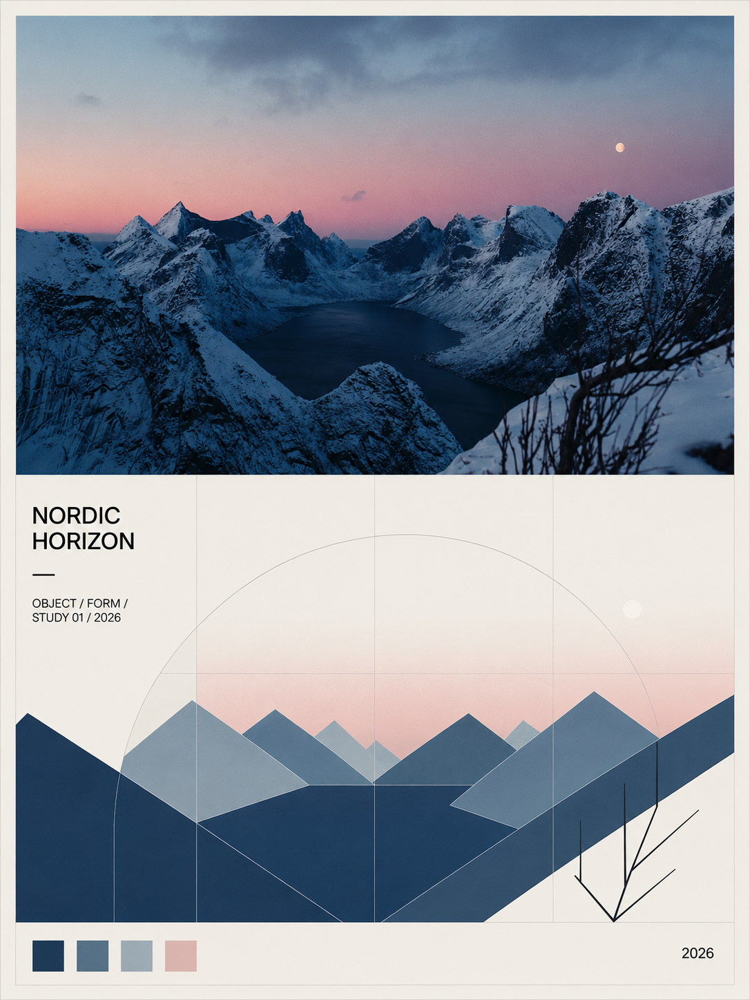
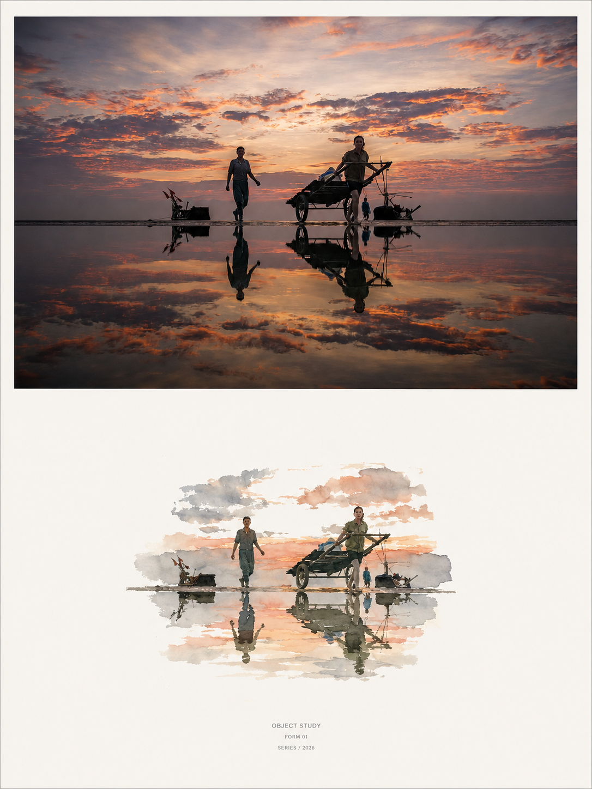
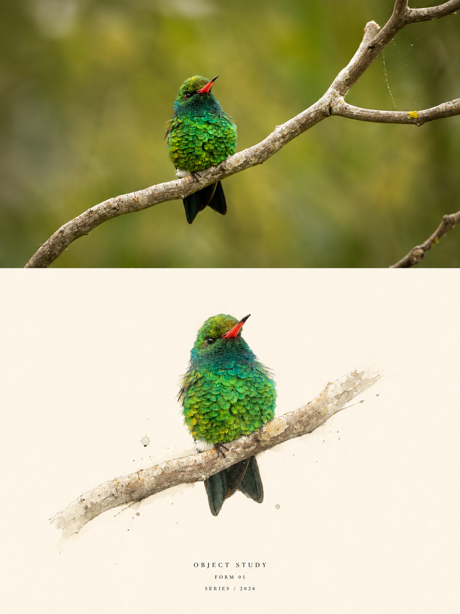
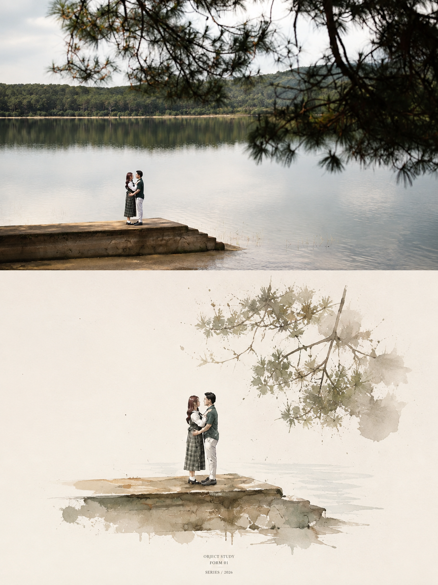
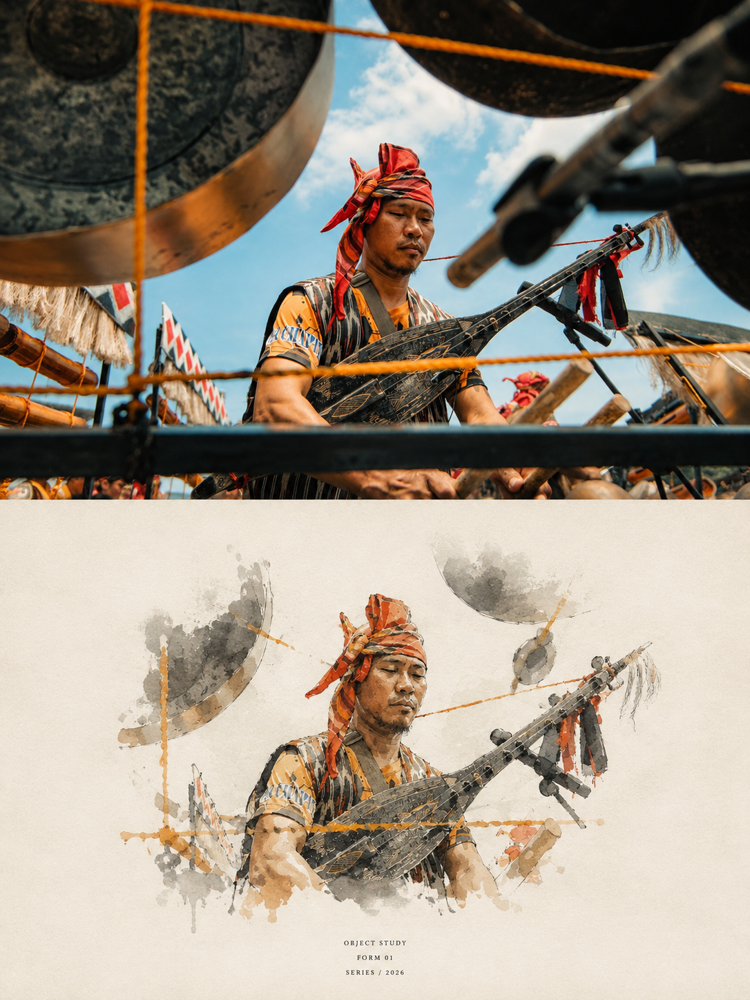
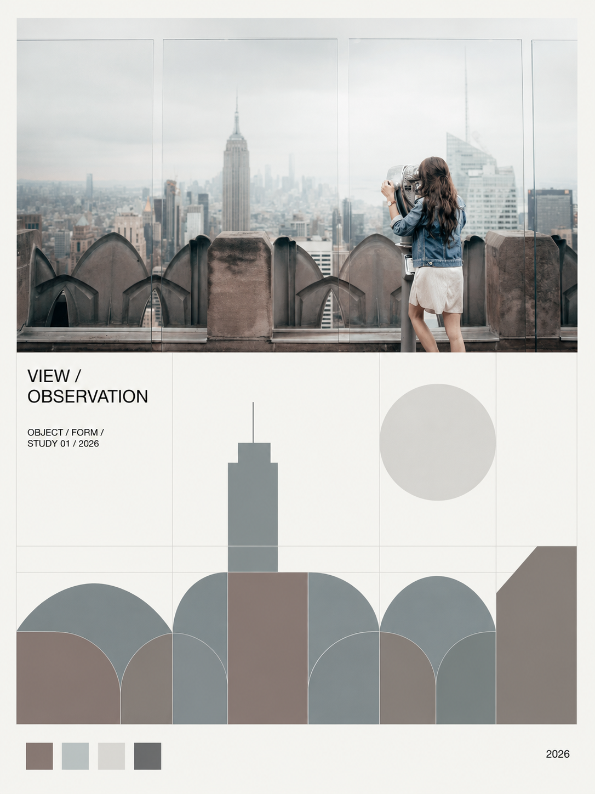
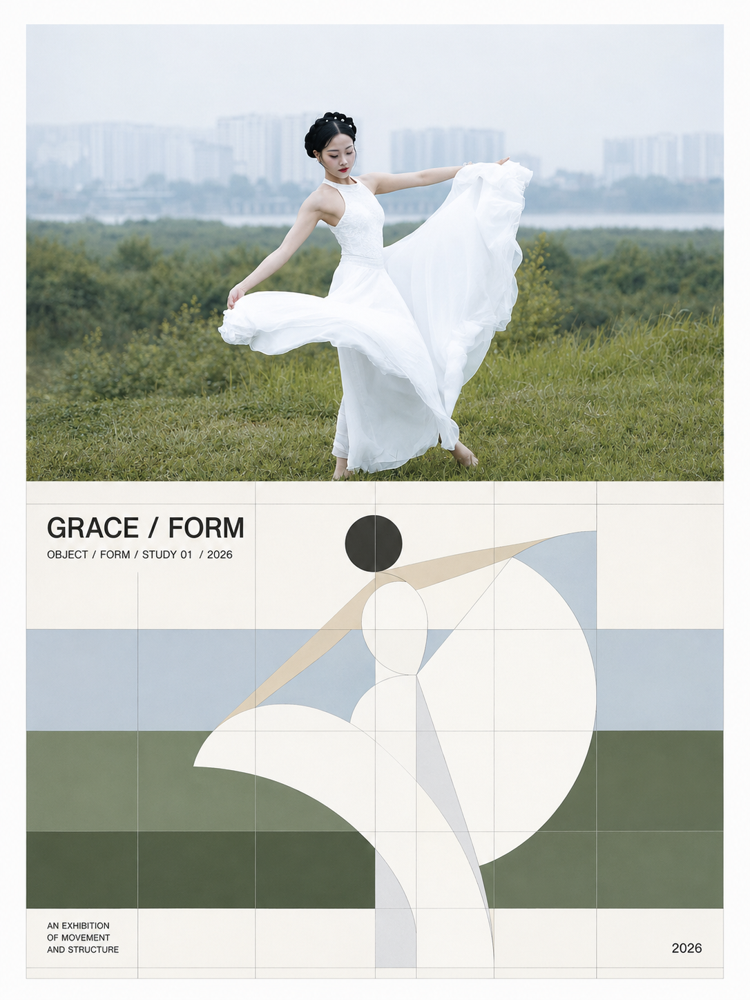
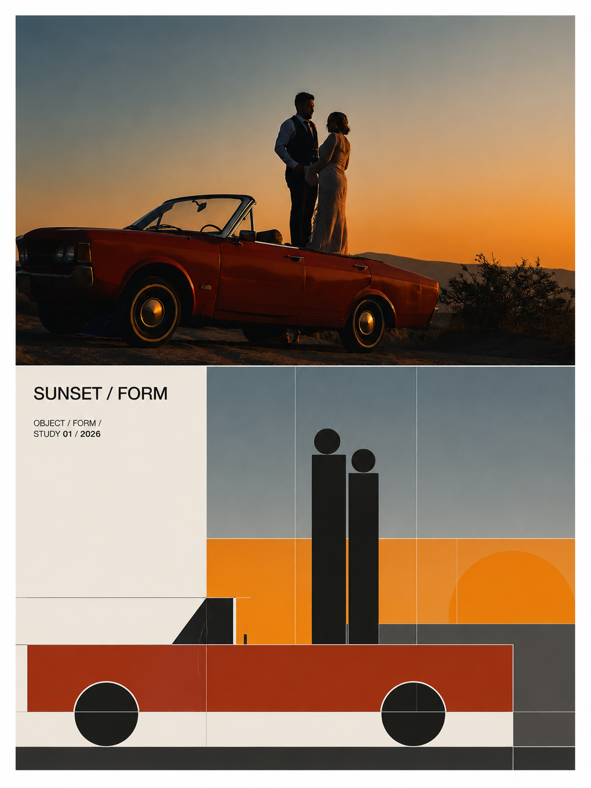
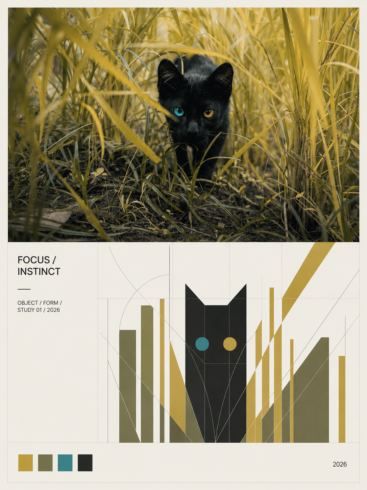
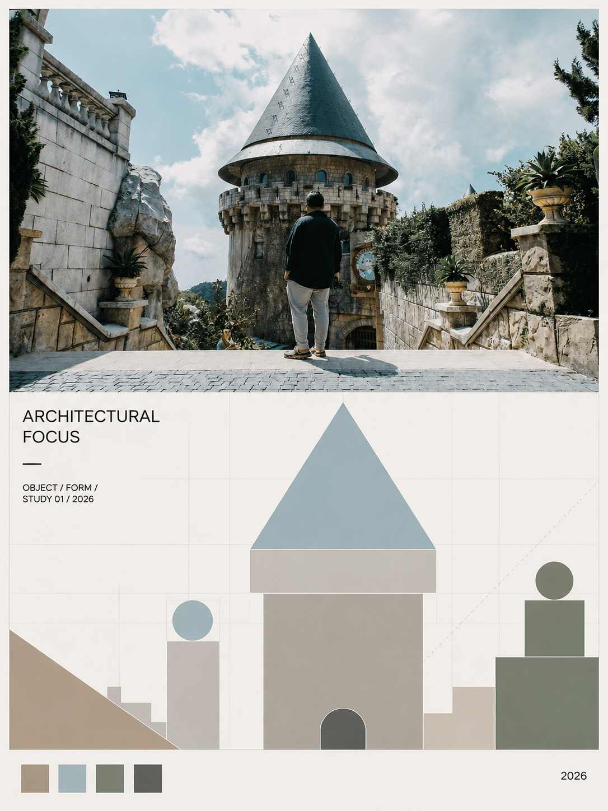

A / SOURCE
原图是唯一来源
上半部必须保留当前上传照片的主体、空间关系与环境氛围。不能用另一张“相似风格”的建筑或场景替代它。
SKILL / VISUAL TRANSLATION / 2026
将每张上传照片分别转译成一张独立的 Swiss International Style 摄影海报：上半部保留真实摄影，下半部把主体的轮廓、透视与节奏压缩成严格的几何系统。

PARTNER / AI DISCOVERY
汇集 AI 工具与服务入口，打开 xyhub666.com，继续探索你的下一件工具。
SECOND SKILL / FINE ART
新增一套独立的 Fine Art Poster Translator：上半部保留真实照片，下半部在大面积暖白留白中，以水彩、墨彩或用户指定媒介转译同一主体。
打开艺术海报 Skill



01 / PRINCIPLES
这不是把照片套上一个“瑞士风”滤镜，而是从原图出发，建立一套可解释、可复用的视觉关系。
A / SOURCE
上半部必须保留当前上传照片的主体、空间关系与环境氛围。不能用另一张“相似风格”的建筑或场景替代它。
B / TRANSLATE
楼梯的方向、立面的节奏、桥梁的阴影，都要在下半部留下可识别的几何线索。抽象不等于随机拼贴。
C / GRID
分界线、色块、细线和文字共享同一套 Swiss Grid 与基线，不漂浮、不堆砌，留白也必须是有意的。
02 / EXAMPLES
以下 5 张是用户昨天生成的正式样本：题材不同，但都遵循同一套摄影、结构抽象、网格与信息层级。

上半部保留原照片的山体、湖面、天空、月亮与前景枝条，不用另一张“相似风景”替代。
下半部把山脊压缩成层叠色块，把月亮变成小圆，把视野边界变成极细圆弧。
标题、短横线、元信息、色板和年份都有固定的网格位置，形成完整的画册版式。




视觉基准为用户提供的昨日成品；后续输出应以每张上传照片为唯一主体来源。
03 / WORKFLOW
Skill 会先读取主体与结构，再建立网格、色彩和文字层级，最后检查上下关系是否仍然指向同一张照片。
识别当前照片的主体、环境、透视方向、重复节奏与阴影关系。
建立 3:4 画布、上下约 1:1 分界、统一边距、分栏与基线。
从真实结构提取矩形、圆形、半圆、斜线和比例关系。
检查主体是否可识别、抽象是否有出处、网格是否对齐、颜色是否克制。
请将这张上传照片独立制作成一张 Swiss International Style 瑞士国际主义摄影海报。
每张上传照片必须单独生成一张完整海报；不要合并照片，也不要让不同照片共用同一套抽象图形。
画面采用 3:4 竖版，上下区域严格保持约 1:1，并在全画面使用统一的 Swiss Grid System。
上半部完整保留当前上传照片的主体、空间关系与环境氛围；下半部只从主体的轮廓、透视、重复节奏、阴影、比例和方向中提取结构，转译为几何块、矩形、圆形、半圆、细线与模块化网格。
从当前照片提取 2–4 个核心颜色，并加入米白与灰黑。文字极少，左对齐，使用现代无衬线字体。不得替换原图主体，不得随机拼贴，不得输出无关场景或乱码文字。PACKAGE / READY TO PUBLISH